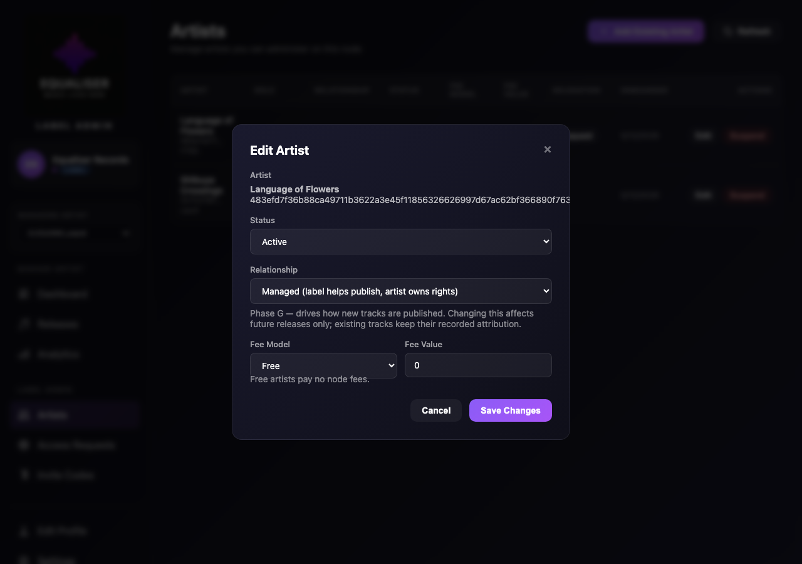
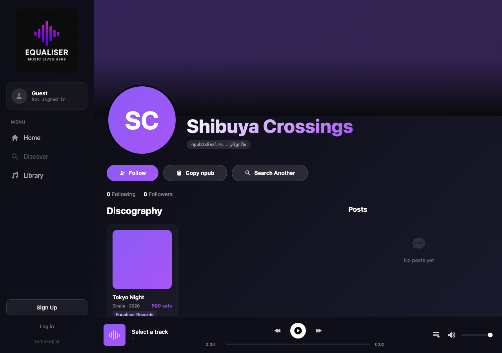
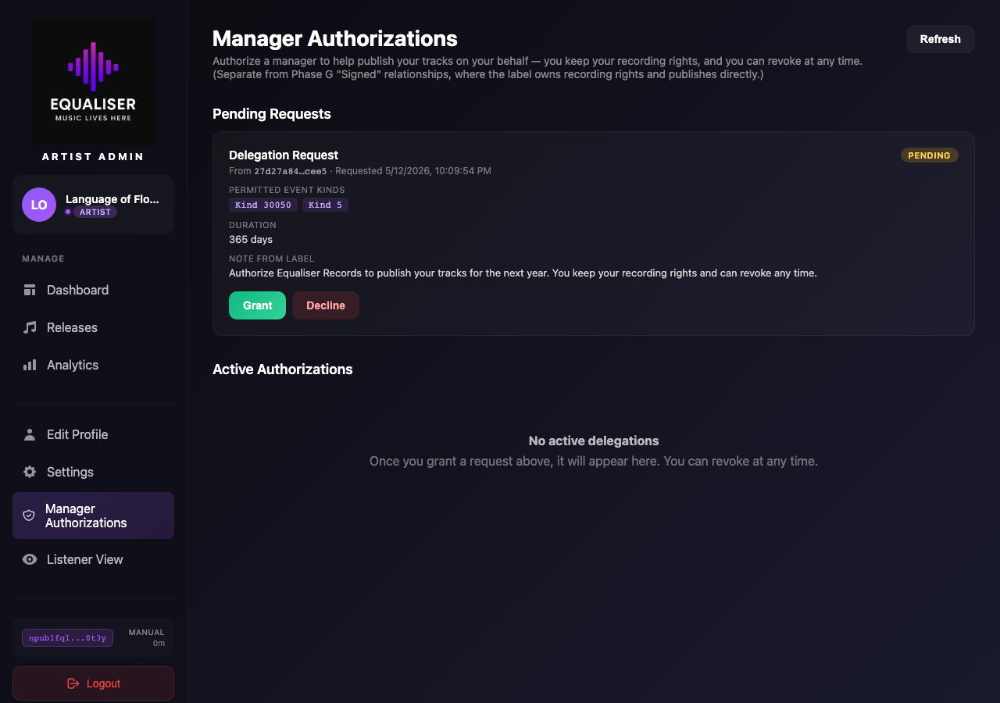

Signed vs Managed — Phase G recording-rights
Equaliser supports two parallel ways a label can work with an artist on this node. They look similar in the admin UI but model very different real-world relationships, and the publishing flow differs in who signs the Kind 30050 event.
signed Label owns recording rights
The label IS the publisher. Tracks are signed by the label's pubkey (event.pubkey) with a ["p", artist_pubkey, "", "performer"] attribution tag. Fans pay the label; the label distributes royalties to the artist off-chain.
Strict mode: only the artist's current managed_by label can publish for them on this node. Another label attempting to publish gets 403 not_current_label.
Real-world analogue: Taylor Swift on Big Machine → Republic → Taylor's Version. Rights are per-recording, so historical tracks signed by a previous label remain in the catalogue when the artist switches.
managed Manager helps independent artist
The artist holds their own nsec and owns the recording rights. They authorise a manager via a NIP-26 delegation token — a signed conditions string saying "label X may sign Kind 30050 / Kind 5 on my behalf for the next N days".
Tracks are still signed by the manager (so the manager can do the admin work), but the event carries a ["delegation", artist_pubkey, conditions, signature] tag proving the artist consented.
Artist can revoke at any time. Money flows to the artist. Surfaced in the admin sidebar as Manager Authorizations.
1 Pick the relationship at roster-invite time
From /admin/artist-management.html, the label clicks Add Existing Artist. The Phase G modal now has a Relationship picker with explanations for each type. Whatever is selected here becomes the artist's node_artists.relationship_type when they redeem the invite code.

CreateOrphanInviteCode writes target_relationship_type on the invite, and RedeemInviteCode propagates it to node_artists.relationship_type at redemption.
2 Roster shows the relationship per artist
After the artist redeems the invite + completes their profile-setup flow (where their Kind 0 is discovered or freshly published — see Artist Joins a Roster), they appear in the label's table with a Relationship badge. Below: Equaliser Records has onboarded Shibuya Crossings as signed and Language of Flowers as managed — both relationship types coexist in one label's roster.

3 Editing an artist — change relationship + (operator-only) transfer label
The Edit Artist modal has a Relationship dropdown so the label/operator can flip an artist's relationship type going forward. Operators additionally get a "Current Label" input — used to transfer an artist between labels (e.g. Magic → Sony). Historical tracks signed under the previous relationship remain in the catalogue.

PATCH /api/label/artists/{pubkey} with relationship_type (label/operator) and managed_by (operator-only) handles both flows.
4 Phase G performer-tag publish
When Equaliser Records publishes a Kind 30050 for Shibuya, the client's signTrackEvent router looks up Shibuya's relationship_type (cached per page), sees signed, rewrites event.pubkey to the label, and splices in a ["p", shibuya_pubkey, "", "performer"] tag. Strict-mode check on the orchestrator side confirms node_artists[shibuya].managed_by == ctx.pubkey before accepting.
artist_pubkey (the performer), recording the signer in cached_tracks.label_pubkey. So a single GET /api/cache/tracks?artist=<shibuya> returns both her self-published catalogue (if any) AND her Equaliser-Records-signed catalogue.
5 Label badge appears on the release card
On the client SPA's artist page (/artist.html?npub=…), the release card carries a small Equaliser Records badge below the price. The client reads cached_tracks.label_pubkey from the Cache API, resolves it to a Kind 0 display name (falling back to raw events for labels not in the cached-users denorm), and renders the badge.

6 Manager Authorization request lands in the inbox
For a managed artist, the manager makes a separate consent-gated request via POST /api/delegations/request. The artist sees it on /admin/delegations.html (sidebar entry: Manager Authorizations). Below: LoF's inbox showing Equaliser Records' pending request — kinds 30050 + 5, 365 days, the manager's note.

POST /api/delegations/{id}/grant. From then on the manager can splice the delegation tag into Kind 30050 events on behalf of the artist. The artist can revoke any time from the same page.
7 Summary — when to use which
signed
- Label owns recording rights — pays artist off-chain
event.pubkey= label · performer tag = artist- No artist signature required to publish
- Strict-mode
managed_bycheck gates publishes - Label badge appears on artist's listener page
- Switching labels: operator PATCH; old tracks stay
managed
- Artist owns recording rights — paid directly
event.pubkey= manager · delegation tag attests consent- Artist signs the NIP-26 delegation token client-side
- Manager can revoke = nothing; artist can revoke any time
- Manager Authorizations inbox on artist's admin
- Other Nostr clients respecting NIP-26 attribute to artist